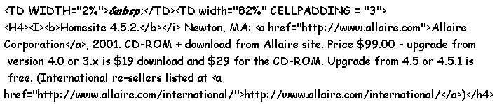
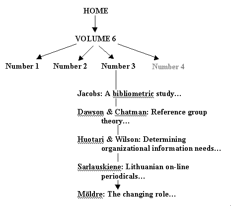

Homesite 4.5.2. Newton, MA: Allaire Corporation, 2001. CD-ROM + download from Allaire site. Price $99.00 - upgrade from version 4.0 or 3.x is $19 download and $29 for the CD-ROM. Upgrade from 4.5 or 4.5.1 is free. (International re-sellers listed at http://www.allaire.com/international/)It is possible, by the time this review appears that the merger between Allaire and Macromedia will have resulted in an integration of the two companies' Web-sites. Already links exist from one to the other but as the joint company will be trading under the Macromedia banner, I assume that a single Web-site will be created. Homesite has been reviewed previously in the journal and I commented then that I had been using it since it was a shareware product. It is certainly the best HTML editor that I have used, and I've tried most of them. As the decimals suggest, this version is more of an upgrade than a completely new product. That is wise, because a totally new product, devised simply to get something different into the market place, would probably be a disaster. Homesite works as well as it does because it fits the way I (and presumably many more people) actually devise Web pages and it has evolved in a way that satisfies my needs. A drastic revision would probably turn me, and others, to something different. Because Homesite is so well established and because the basic functionality has been dealt with in that earlier review, it seems sensible to focus on the changes that have been made in this version. However, versions 4.5 and 4.5.1 have not been reviewed, so the information presented here relates to 4.5 and its subsidiaries. First, the 'look and feel' and ease of use are exactly the same. Anyone accustomed to using Homesite, therefore, will find themselves completely at home. The changes that have been made do not affect the basic HTML operations and if, like me, you use Homesite for relatively straightforward applications, you will barely notice any change. However, even at this level, there are some differences, and I find some of them a bit of a nuisance. For example, in version 4.5, when you hit the toolbar item for a list type (UL or OL) or for a list item (LI), the code was simply put into the page. Now a pop-up window appears, which offers you the possibility of defining the character that appears at the beginning of each list item, and also presents further dialogues for defining other attributes of style, the browser version to be used, and the javascript 'events' that may defined for the tag. For me, this is over-kill, although I can see its value for the professional Web-designer, and, worse, I cannot find any way to switch it off. I can over-ride the windows for custom buttons, but not for the default buttons. This feature is easy enough to ignore, simply by hitting 'Enter', but it is one more key depression that I have to make./p> Turning to the changes and improvements in this version, however, what do we have? The answer is, 'All kinds of small and not so small additions and enhancements.' The first of these is the incorporation of Bradbury Software's TopStyle Lite as the Style Editor. Previous versions had a built in style editor, but Bradbury's offering is much more comprehensive. You need to ensure that the appropriate boxes are checked on the various option menus of both programs, but when this is done, the systems interact effectively. Or, at least, they do on my machine at home; I haven't been able to get the two programs to interact on my office machine (although Windows NT is used on both systems), and neither I, nor our Computer Manager, have been able to get the system to work - in spite of suggestions from Allaire. As the office machine is on a network and the home machine is not, I assume it may be something to do with network connections, but no-one seems to know what the solution may be. Another attempt to gain increased functionality is the use of Ipswitch, Inc.’s WS_FTP program to effect ftp connection with remote servers for uploading and downloading files. The University of Sheffield does not allow me to connect from home via a commercial ISP, and the direct connection tends to be overloaded, so I do these things from the office. However, I already use WS_FTP for file transfer and if it works as well through Homesite as it does alone, it should be perfectly satisfactory. You have to define your connections, of course, and provide user-name and password, for the connection to be made, but integrating this within Homesite means that updating files and re-loading them simply becomes part of the overall operations. There are a number of new, small features to aid editing: one is the ability to split the editing window. This helps me to create the 'colophon' at the end of each paper by allowing me to cut and paste information from the top of the page in one pane, to the bottom of the page in another. Previously, I had to scroll up and down. Another is the ability to collapse code in the editing window - I'm not entirely sure how I would use this feature, but the suggestion is that it can improve page readability while editing. I suppose that if you have a long and complex page and wish to concentrate on part of it, especially a section with many tags or javascript or style statements, this may be useful. Figures 1 and 2 below show a section of code as it appears normally in the editing window and the collapsed text button that replaces it. 
Figure 1: The normal editing text
Figure2: Collapsed text button
The 'Resource Tabs' in Homesite house the buttons that generate code when clicked. Figure 3 shows the 'Common' tab, the buttons of which allow, from left to right: Quick start of a new document; Insert body tag; Insert paragraph tag; Insert break tag; Insert non-breaking space tag; Anchor link; Insert image tag; Horizontal rules; Centre text; Right justify text; and Insert div tag: Figure 3: 'Common' resource tab
In version 4.5 onwards these tabs can be customised to a high degree, by varying the buttons on each tab and also by 'floating' the tabs to new positions: thus the editor can choose which buttons to have available, ignoring those that he or she rarely uses. These versions also have improved project management features: first, Homesite now enables 'virtual folders', which can bring together in one folder files that are, in fact, widely separated in different directories. Folders may also be auto-inclusive, that is automatically including new files. This, as I discovered, can be rather dangerous as a Project can become full of files one does not wish to be there! Better to use manual inclusion. The package also has an Image Map editor, which enables you to take an image and define areas that lead to different pages. Figure 4 below is a crude example, in which I have created a partial tree of Volume 6 of Information Research. Move the cursor over the tree and click on any point that proves to be clickable (not all of them are). When you click on 'Number 3', for example, a new window pops up with the contents page in it - remember to close any window after you have viewed it. 
Figure 4: Sample image map
Mmm! Perhaps I should think of putting some maps like this on the site for navigation purposes, now that it so easy! Homesite is a deceptive product: you can use it for relatively simple applications, such as producing an electronic journal that has little in the way of special coding and, if you do, the Resource tabs and other ease of use features, make it entirely satisfactory. Behind the simple facade, however, is a big Web editing machine that looks as though it will be up to any task you want to give it. Perhaps this is why, according to one survey (by Internet World in 1999), 52.9% of 136 professional design firms were using the package. Highly recommended and, if you already use Homesite, worth the upgrade price. Professor Tom Wilson |